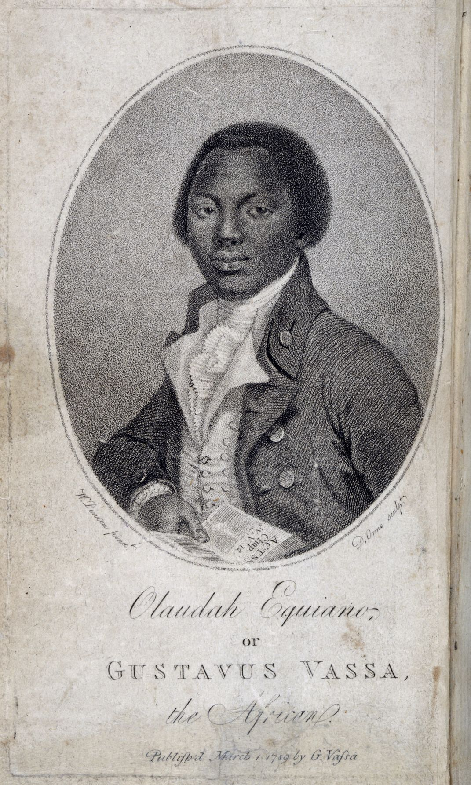

The project

This report asks you to read two documents from the Atlantic slave system and say what each one can and cannot tell us.
Source 1 is Olaudah Equiano's account of the voyage across the Atlantic, published in London in 1789. Source 2 is the Code Noir for Louisiana, an edict the French crown issued in 1724, closely modeled on the 1685 Code Noir for the Caribbean colonies. One was written by a man who endured the voyage. The other was issued by the crown for officials and colonists. Both texts are printed on this page.
Equiano's account describes conditions aboard a slave ship. Passages that describe violence in detail are left out and marked [Omitted].
Start reading- Read both sources. Select words in the passage to highlight them.
- Fill in the source profile: who is speaking, who is addressed, what the speaker wanted.
- Make evidence cards: a few words from the source, where it is, what it shows.
- Draft four answers, one paragraph each.
- Check your drafts against the rubric.
- Save your process record as a PDF. Copy your four answers into the assignment's text box.
- Understanding of the material4 points
- Quality of reasoning4 points
- Clarity and precision of expression4 points
- Intellectual honesty4 points
Your teacher scores each criterion from 1 to 4. You do not need an outside source.
The background for this report is in the Module 21 lessons: the sugar colonies, the Atlantic slave trade, and the Middle Passage. Details from those lessons count under “Understanding of the material.” Keep them open while you write.
Optional workspace: if your class uses a virtual space, you can enter it, place your evidence cards on a whiteboard as notes, and take a picture to look at while you write. The report you turn in is the same either way.
Read and capture
Select words in the passage, then choose Highlight or Make card. A highlight stays until you click it. A card copies the words into a new evidence card.

- Author
- Olaudah Equiano, also called Gustavus Vassa
- Published
- London, 1789, printed for and sold by the author
- Addressed to
- The book's dedication is to the Lords and Commons of the Parliament of Great Britain
- Passage
- Chapter II: the voyage on the slave ship
Equiano wrote this account in London, years after the voyage, for readers in Britain. A · · · line means words were skipped. [Omitted: …] means a passage of violence is left out and summarized in one line. Everything else is word for word from the published text, including its old spelling.
The first object which saluted my eyes when I arrived on the coast was the sea, and a slave ship, which was then riding at anchor, and waiting for its cargo. These filled me with astonishment, which was soon converted into terror when I was carried on board. I was immediately handled and tossed up to see if I were sound by some of the crew; and I was now persuaded that I had gotten into a world of bad spirits, and that they were going to kill me. Their complexions too differing so much from ours, their long hair, and the language they spoke, (which was very different from any I had ever heard) united to confirm me in this belief. Indeed such were the horrors of my views and fears at the moment, that, if ten thousand worlds had been my own, I would have freely parted with them all to have exchanged my condition with that of the meanest slave in my own country. When I looked round the ship too and saw a large furnace or copper boiling, and a multitude of black people of every description chained together, every one of their countenances expressing dejection and sorrow, I no longer doubted of my fate; and, quite overpowered with horror and anguish, I fell motionless on the deck and fainted.
I now saw myself deprived of all chance of returning to my native country, or even the least glimpse of hope of gaining the shore, which I now considered as friendly; and I even wished for my former slavery in preference to my present situation, which was filled with horrors of every kind, still heightened by my ignorance of what I was to undergo. I was not long suffered to indulge my grief; I was soon put down under the decks, and there I received such a salutation in my nostrils as I had never experienced in my life: so that, with the loathsomeness of the stench, and crying together, I became so sick and low that I was not able to eat, nor had I the least desire to taste any thing. [Omitted: Two crewmen tie him down and whip him because he will not eat.] I had never experienced any thing of this kind before; and although, not being used to the water, I naturally feared that element the first time I saw it, yet nevertheless, could I have got over the nettings, I would have jumped over the side, but I could not; and, besides, the crew used to watch us very closely who were not chained down to the decks, lest we should leap into the water: [Omitted: He saw captives who tried to jump overboard cut and whipped, and others whipped every hour for not eating.]
The stench of the hold while we were on the coast was so intolerably loathsome, that it was dangerous to remain there for any time, and some of us had been permitted to stay on the deck for the fresh air; but now that the whole ship's cargo were confined together, it became absolutely pestilential. The closeness of the place, and the heat of the climate, added to the number in the ship, which was so crowded that each had scarcely room to turn himself, almost suffocated us. This produced copious perspirations, so that the air soon became unfit for respiration, from a variety of loathsome smells, and brought on a sickness among the slaves, of which many died, thus falling victims to the improvident avarice, as I may call it, of their purchasers. This wretched situation was again aggravated by the galling of the chains, now become insupportable; and the filth of the necessary tubs, into which the children often fell, and were almost suffocated. The shrieks of the women, and the groans of the dying, rendered the whole a scene of horror almost inconceivable. [Omitted: Three captives, two of them chained together, jump through the nettings into the sea. Two drown. The crew pulls the third back aboard and whips him.] In this manner we continued to undergo more hardships than I can now relate, hardships which are inseparable from this accursed trade. Many a time we were near suffocation from the want of fresh air, which we were often without for whole days together. This, and the stench of the necessary tubs, carried off many.
Olaudah Equiano, The Interesting Narrative of the Life of Olaudah Equiano, or Gustavus Vassa, the African. Written by Himself (London: printed for and sold by the author, 1789), Vol. I, Chapter II. Text: Project Gutenberg eBook #15399, gutenberg.org/ebooks/15399. Excerpt of 672 words.
Code Noir (Louisiana, 1724), the French crown's edict for Louisiana, closely modeled on the 1685 Code Noir for the Caribbean colonies.
- Issued by
- The French crown
- Issued
- March 1724
- Written for
- The French colony of Louisiana, to be enforced by colonial officials
- Articles
- II (as summarized in this edition), XXXVIII, XL, XLIII
A royal edict is written by people with power for the people who must obey it. Note who is speaking, who is addressed, and what the crown wants done. Article numbers are printed as in this edition, and the text keeps its spelling and punctuation. A · · · line means articles were skipped.
Summary printed in this edition, not the full articleII.Makes it imperative on masters to impart religious instruction to their slaves.
XXXVIII.We also forbid all our subjects in this colony, whatever their condition or rank may be, to apply, on their own private authority, the rack to their slaves, under any pretence whatever. and to mutilate said slaves in any one of their limbs, or in any part of their bodies, under the penalty of the confiscation of said slaves; and said masters, so offending, shall be liable to a criminal prosecution. We only permit masters, when they shall think that the case requires it, to put their slaves in irons, and to have them whipped with rods or ropes.
XL.Slaves shall be held in law as movables, and as such. they shall be part of the community of acquests between husband and wife; they shall not be liable to be seized under any mortgage whatever; and they shall be equally divided among the co-heirs without admitting from any one of said heirs any claim founded on preciput or right of primogeniture, or dowry.
XLIII.Husbands and wives shall not be seized and sold separately when belonging to the same master: and their children, when under fourteen years of age, shall not be separated from their parents, and such seizures and sales shall be null and void. The present article shall apply to voluntary sales, and in case such sales should take place in violation of the law, the seller shall be deprived of the slave he has illegally retained. and said slave shall be adjudged to the purchaser without any additional price being required.
B. F. French, ed., Historical Collections of Louisiana, Part III (New York: D. Appleton & Company; New Orleans: J. Ball, 1851), "Black Code of Louisiana," pp. 89–95: Article II on p. 89 (the editor prints a one-line summary of Article II, not the full article), Article XXXVIII on p. 93, Articles XL and XLIII on p. 94. Scan: archive.org/details/cihm_36229. Excerpt of 265 words.
Write
Answer each question in complete sentences. Aim for one solid paragraph for each. Your work saves in this browser as you type.
A quotation is a few words copied exactly and set inside quotation marks. Follow it with your own explanation.
Olaudah Equiano published his life story in 1789. The French crown issued the Code Noir for Louisiana in 1724. For each document, say who is speaking, who the audience is, and what the speaker wanted to achieve. How might these differences change what each document can teach us?
My evidence cards
Choose one passage from Equiano's account of the voyage. Quote it in a few words, then explain in your own words what it shows about conditions aboard the ship and how he felt about them.
My evidence cards
The Code Noir orders that masters give enslaved people religious instruction and limits some punishments, yet it also treats them as property that can be bought, sold, and inherited. Using evidence from both documents, explain how Equiano's account answers the idea that a person can be property.
My evidence cards
A historian wants to learn how the slave system worked from day to day. Which of the two documents would you trust more for that purpose, and why? Name one thing the historian should check before relying on it.
My evidence cards
Check against the rubric
Choose the level that fits each criterion. This is your estimate. Your teacher scores the report.
Process record
The process record is a PDF of your source profile, highlights, evidence cards, drafts and self-rating. Copy your four answers and paste them into the assignment's text box to turn in the report.